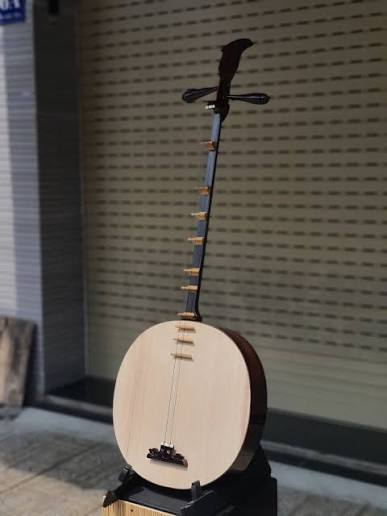

Overview
The Dan Nguyet is a traditional two-stringed plucked lute from Vietnam, recognizable by its circular soundbox and long neck fitted with high frets. It has appeared in Vietnamese fine arts since the 11th century and plays a vital role in expressive traditional melodies.
Learn more about its origins on the Introduction to Dan Nguyet page.
